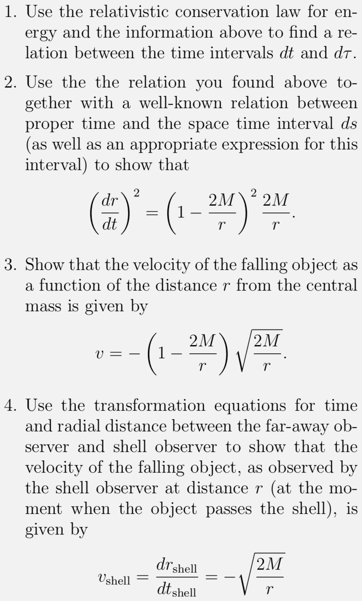

Forrige side🙂 🙁Falling, falling...PADLET
For å komme frem til en hastighet v for det fallende legemet/osbervatøren skal vi følge oppgave 2C.4. Merk at vi først prøver å finne hastigheten v = dr/dt til det fallende legemet målt av langt-vekkobservatøren. Deretter konverterer vi dette uttrykket til hastighet vsh målt av en lokal skallobservatør. På den måten kan vi sammenlikne den hastigheten til legemet som funksjon av tiden sett av de to forskjellige observatørene. Det er sterkt anbefalt at du prøver deg på denne oppgaven. Sett deg en kort tidsgrense i tilfelle du blir stående fast og bruk videoen på neste side til å hjelpe deg kun til de delene der du sitter fast. Dette er en meget god eksempeloppgave for å lære å regne med uttrykket for energi. (MERK at det i den første oppgaven står “information above”, det er det samme som står på de 3 foregående sidene!)
